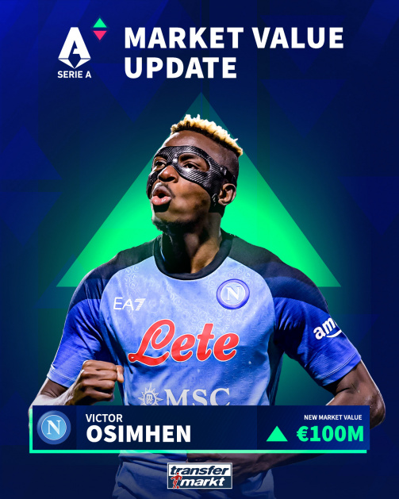
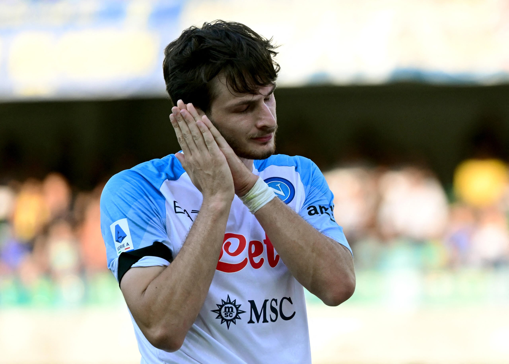
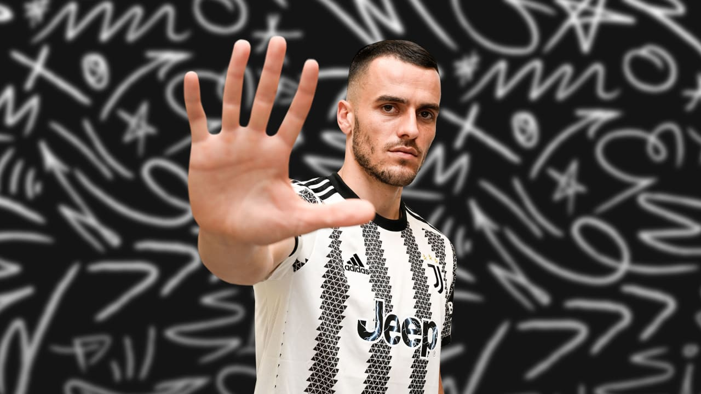
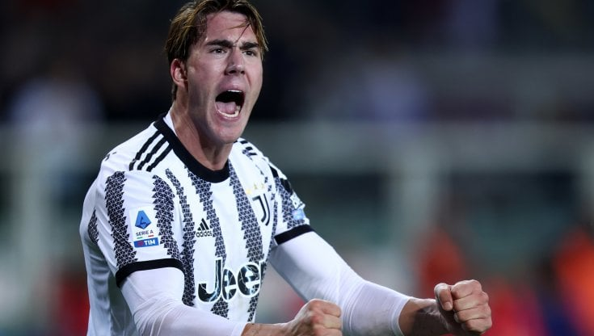
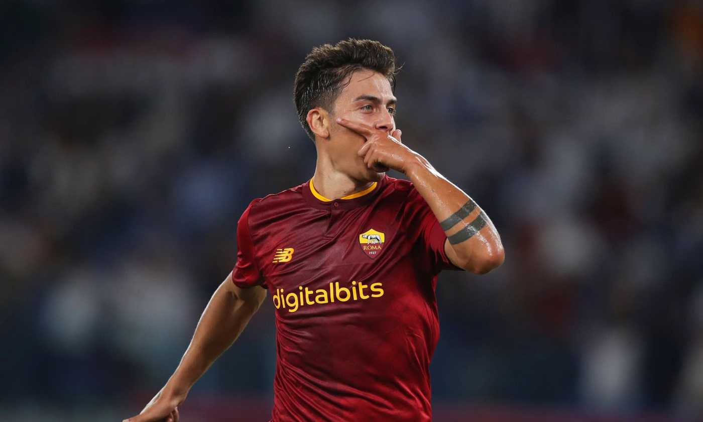

Victor Osimhen
Voto: 9
Victor James Osimhen (Lagos, 29 dicembre 1998) è un calciatore nigeriano, attaccante del Napoli e della nazionale nigeriana.Attaccante capace di giocare su tutto il fronte offensivo, preferisce il ruolo di punta centrale, attaccando spesso la profondità. In possesso di una elevata velocità, forza fisica e buone doti di finalizzazione, ha dimostrato di essere anche un ottimo colpitore di testa, essendo dotato di un'ottima elevazione. Per le sue caratteristiche, è stato paragonato a Didier Drogba, al quale ha dichiarato di ispirarsi.
Devastante

Khvicha Kvaratskhelia
Voto 8.5
Ala sinistra dal fisico longilineo, può giocare su tutto il fronte offensivo. Pur essendo bravo con entrambi i piedi, predilige l'uso del destro, soprattutto per accentrarsi partendo dalla fascia opposta.Elegante nella corsa, dispone di una grande accelerazione palla al piede, oltre a essere abile nel dribbling, nella finalizzazione e nei calci piazzati.Dà il meglio di sé quando si trova in campo aperto,ed è anche in grado di creare occasioni da gol per i compagni, grazie alla buona visione di gioco. Per le sue caratteristiche, è considerato uno dei migliori talenti mai espressi dal calcio georgiano.
Rivelazione

Filip Kostić
Voto 8
Di piede mancino, ha iniziato la propria carriera come ala sinistra per poi venire spostato nel ruolo di esterno di centrocampo a tutta fascia durante la sua militanza all'Eintracht Francoforte.Dotato di corsa, fiato e fisicità, è più incisivo nella fase offensiva che in quella difensiva riuscendo comunque ad essere un giocatore duttile risultando abile, soprattutto nel fornire assist ai propri compagni di squadra.Può giocare anche come ala destra.
Treno

Dusan Vlahovic
Voto 7.5
Ritenuto tra i calciatori più promettenti della propria generazione,è un attaccante dal fisico possente, dotato di notevole tecnica, può giocare sia da prima sia da seconda punta.Mancino puro, possiede un tiro potente e preciso, che gli permette di risultare uno specialista nei calci piazzati e nei calci di rigore.
Predestinato

Paulo Dybala
Voto 7.5
Annoverato tra i talenti più promettenti della sua generazione, è un'elegante prima o seconda punta, talvolta anche ala destra, dotato di estro e imprevedibilità.È bravo nel contropiede e nel dribbling e riesce a segnare anche dei gol di testa grazie alla rapidità negli spazi brevi e alla sua agilità.Può essere impiegato anche come trequartista, esterno offensivo o falso centravanti.
La Joya
